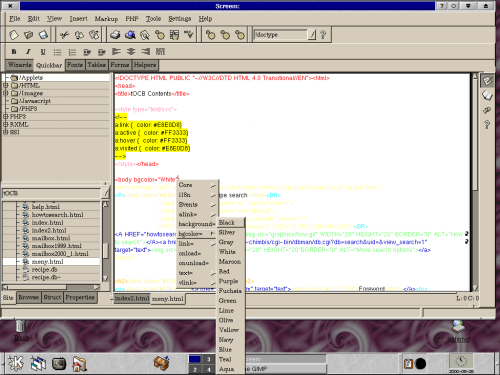

In the last installment of this series I said that I wouldn't do any more HTML editor reviews for a while. My thought was to focus on other aspects of web site creation. Well, that was my plan and the following piece of software may actually fall into a much larger scheme when finished. What is there now is pretty impressive already.
http://www.screem.orgVersion reviewed: 0.3.0Needs:Gnome installed (gnome-libs 1.2 or later) |
IntroductionSCREEM (Site CReating and Editing EnvironMent) is not an HTML editor. Well, it is an editor now, but the plan although somewhat vague at the moment, is to make it much more than an HTML editor. The authors are aiming to make it and entire web production environment. How they succeed and how much extras there will be only the future will tell. As it looks right now it seems very promising however. Talking about SCREEM as it looks now is like talking about a construction site - there are lots of buttons that do nothing or haven't got the final appearence. |
First a few notes on installation.
I grabbed the rpm-file from the SCREEM site and proceeded to install it. I then got the message that Screem needs updated gnome-libs as well as libguile and libreadline. Fortunately I had updated gnome-files on a CD here at home so I installed that. After a brief hunting expedition I found libguile and libreadline as well (on the GNU ftp site) and compiled and in they went. I had to symlink the above mentioned files to the main .so and after adding the directory to the path I installed Screem. The latest (at the time of writing 0.3.0) simply refused to compile claiming lack of libXpm. A new expedition to the net failed to provide this library instead refering to the imlib package. Which I had installed. This is probably due to me looking in the wrong places. In the end I had to resort to grabbing a precompiled 0.3.0 rpm. (Thanks Matthew!). It would seem that by installing Helix GNOME all these problems would go away. I'm a KDE guy though ...
When you start working on a site, the idea is that you create a project for the files associated with that site. You specify things as the project name, base local directory, recieving FTP server and so on and after that you find all files related to the project neatly in one place. You do not have to create a project to edit pages however. The file browser (see screen shot) is organised by two categories, Single pages and the names of any created projects. Dubble-clicking on a file loads it into the editor.
Writing and editing text in SCREEM is easy. Though, perhaps still not as easy as it could be. This editor is organised by menus and tabbed tool bars as most modern editors are. In this early version however the tool bars are quite empty (they lack obvous choices like P, BR and HR tags) so I've found it sometimes quicker not using them for inserting tags. Fortunately there is a tag browser in the left hand frame organised by what the tags do. Categories include Global structure, Body structure, and Tables among others. Here I miss an All category as it would make hunting for the elusive tag somewhat easier. It should also be mentioned that the tag browser is not finished. There is support for HTML, PHP3, RXML and SSI - there is space reserved for Javascript as well. And although there is extensive CSS support, CSS is not among the categories available. Working with the CSS wizard proved a most frustrating experience. It simply kept crashing every so often. Once it let me insert the style sheet in the document I was working on, all further attempts crashed the browser. Likewise with the save function. More work seems to be necessary on this part. The table wizard however works flawlessly.
What is very neat is the tag@lists.linuxgazette.netpletion feature. It is very handy and it works nicely. Insert a tag pair, put the cursor at the end, just before the closing pointed bracket of the first tag and hit space. You get a menu showing you the valid options at that point. Select an option and you (depending on the option) may get another menu showing you the valid values for that option. This is just like my favourite HTML editor all OSes HomeSite and very, very handy. It is just fair to say that Quanta has something similar but not triggered by the space button. While editing your page you have constant access to a preview mode. This is handy for a quick glance at the page but doesn't support CSS (at least not all of it).
As with Quanta there are some bugs with extended ASCII. In documents written in other editors (and not converted into entities) they may turn up as weird squiggles although they preview correctly. Automatic conversion of characters like å, ä, ö and ü works nicely though. In one run a largish document in Swedish made Screem crash when changing from editor mode to preview mode. This didn't happen when i wanted to check up on this bug a second run. The problem was there - unclear if it was related to Screem though. Talking about preview mode it is not entirely reliable. Sometimes the preview is empty, atlhough a previous run it showed the page. Sometimes it completely messes up the colour display, rendering the whole page in a grissly blue tone. Most of the time it works.
When you're done editing your texts it is possible to upload your documents from withing SCREEM using a customized verison of sitecopy. SCREEM natively also handles cvs repositories.
Included in the editor is a structural browser (for lack of a better word) and a properties browser. You access both as tabbed boxes in the left hand frame. The former provides a skeleton view of the tags used in your active document. Which may be handy in some cases, although, personally, I would find it much more usefull if the tags in the skeleton view were rearrangeble. If you by dragging a tag in this view to another place moved the actual content in the document. Perhaps in a future version.
The Properties tab is a handy place for keeping all property values easily editable all at once. Click in a tag, switch to the properties tab and you find the possible properties and allready entered values neatly presented.
SCREEM is built in a modular style. People missing some feature or another can easily create an add-in, or Helper application in SCREEM language. According to David Knight:
Helper apps are just programs or scripts which take their input from stdin and output to stdout. What screem does is feed the current document to them, and replace the contents of the editor with whatever they output. They are executed from the popup menu in the editor either individually, or in order if execute all is selected.
For people feeling this too limited there is a possibility of usign Guile scripts to pretty much do whatever they like..
SCREEM is a very promising project allready at version 0.3.0 quite capable of handling most HTML editing. However its aims are set higher than that of a HTML editor. How it succeeds in integrating various scripting languages and markup languages other than HTML future versions will tell. For the moment parts of the editor looks like a building site and there are a few irritating bugs but I feel that there is enough potential here for many of us web site creators.